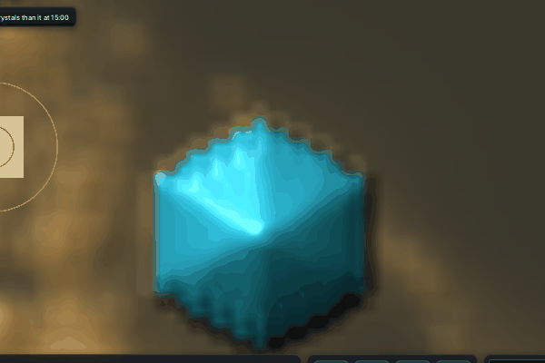
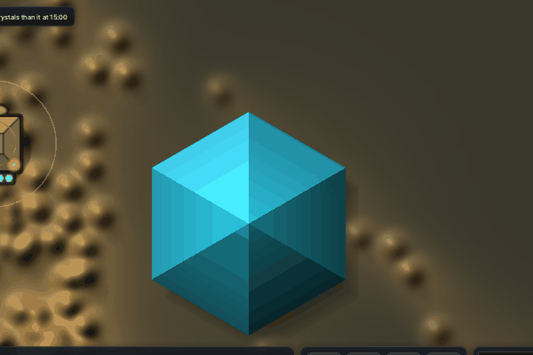
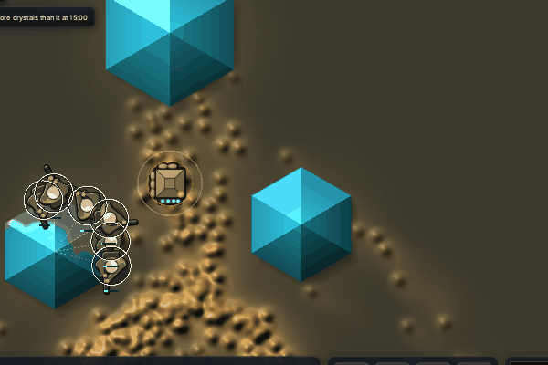
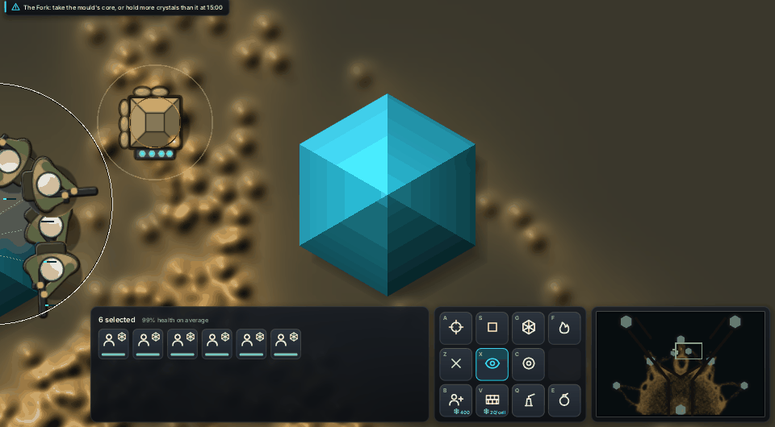
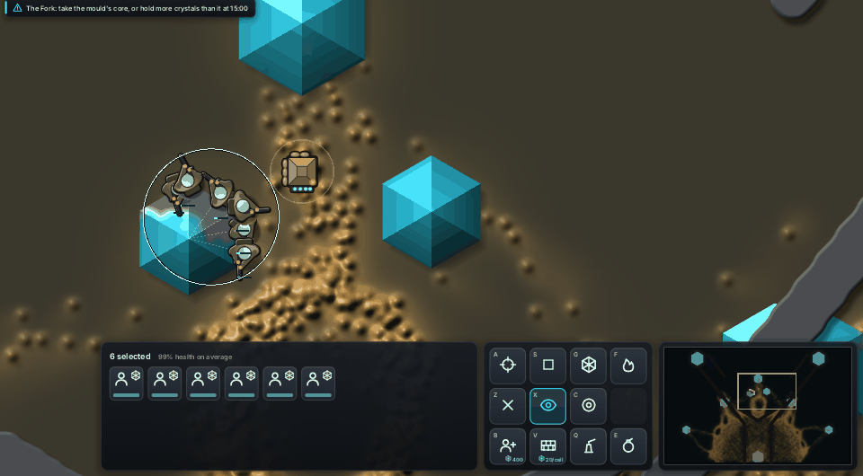
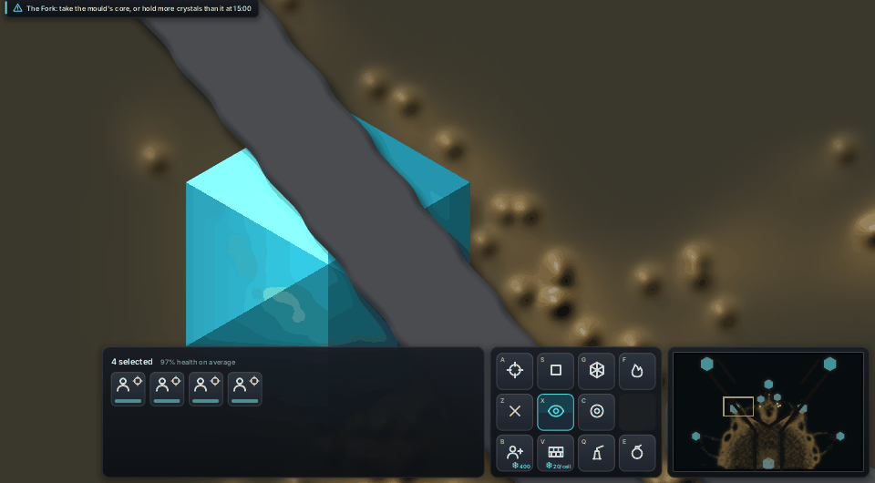

After the playtest note "harvesting crystals could look way better", a crystal now shows its charge cell by cell, live every frame. It stands as tall as its charge and glows with it. The side being taken sinks and turns grey first, and the cells losing charge right now light up white-cyan, whether a soldier or the slime is taking it. A dry crystal is a low grey stub of spent stone.
Same round both sides: seed 1, the farm hand sends the squad to the crystal next to the larder, 3 to 20 game seconds. Before is main from this morning (crystals drawn from cells, charge refreshed once a second); after has the slime thread's hexagons (#230) with this change on top.



Everything here is read from the simulation:
Cost on llvmpipe: none measurable (GPU tail p50 57.6-60.6 ms with it, 58.9-60.9 ms with the live reads off, bench 8 s farm hand 1280 x 800).
Filmed again after the slime thread's sharp slime and the gun lights landed: the same harvest at zoom 12 and 6, and the rock ridge at zoom 12.



Cost together on llvmpipe (bench 8 s farm hand 1280 x 800, GPU tail p50): main 54.1-54.3 ms, with crisp terrain and live crystals 59.6-60.4 ms. That's about 6 ms (11%), almost all of it the terrain edges. The GTX 1070 timing waits until the PC is free.
The soldier's side of harvesting (pose, a glowing carried load, a trail back to the larder) is the units thread's. It will publish each take's position and amount (Game::last_takes) so its effects and this glow read the same numbers.